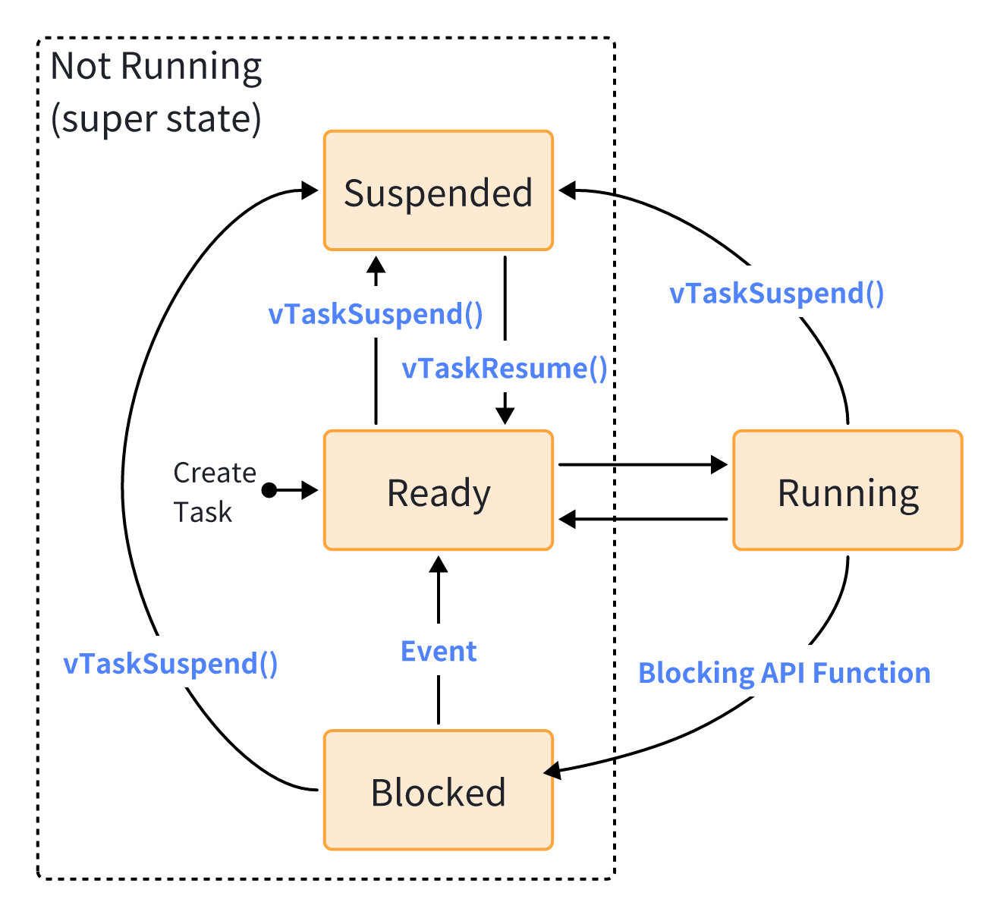
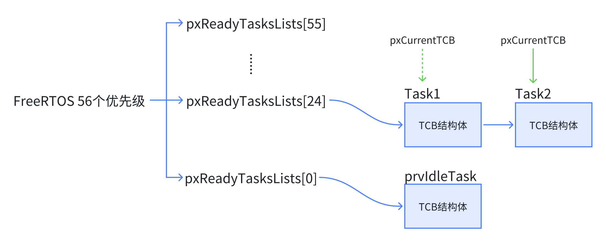
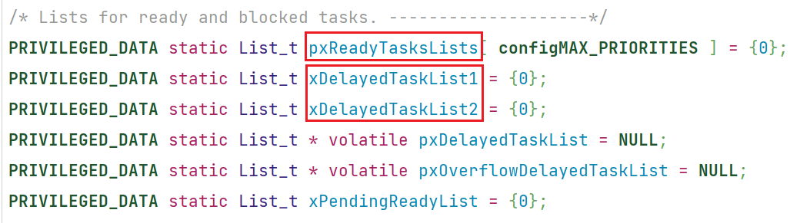
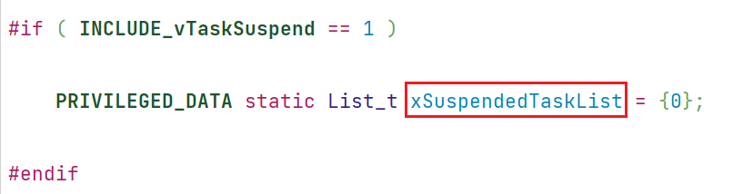
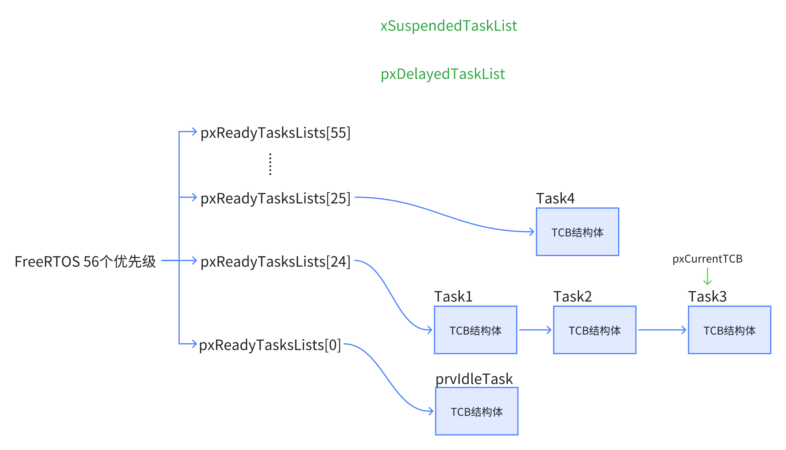
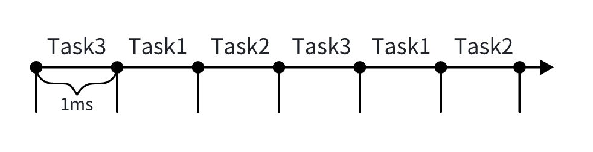
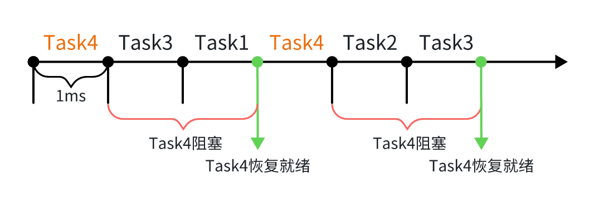
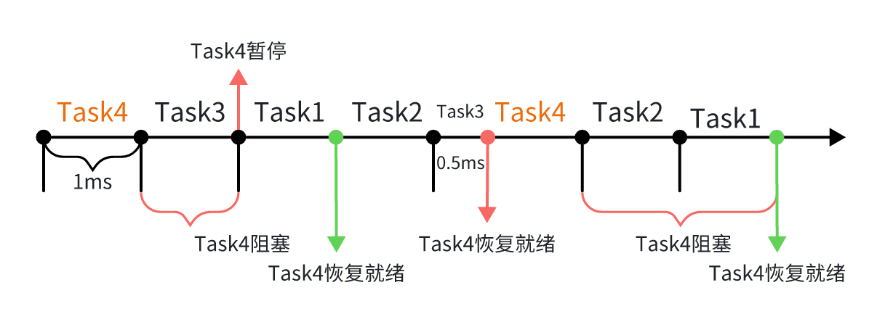
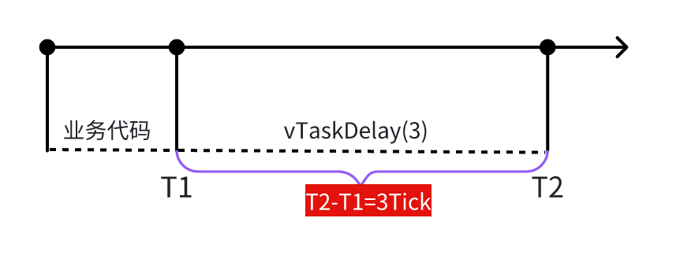
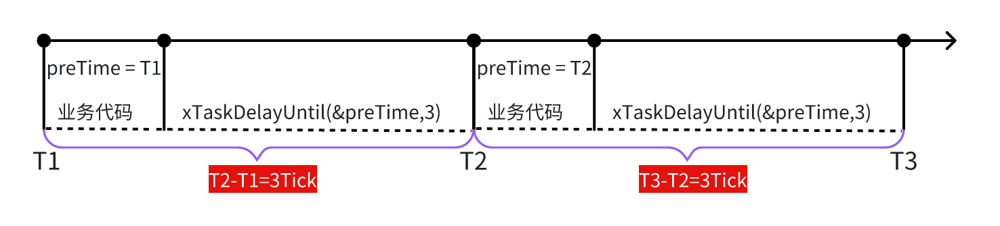

任务管理
3.1 任务的创建与删除¶
3.1.1 任务概念¶
几个任务的重要概念：
- 栈
- 优先级
- 任务状态
- 任务调度
Danger
任务概念会在后面慢慢学习，现暂不展开说明。
3.1.2 创建任务¶
在FreeRTOS中，一个任务封装为一个函数，而函数的定义形式如下：
创建任务地方式分为两种：
- 动态创建任务：
xTaskCreate- 即通过FreeRTOS的堆管理函数（如：
pvPortMalloc）分配任务所需的内存空间。
- 即通过FreeRTOS的堆管理函数（如：
BaseType_t xTaskCreate(
TaskFunction_t pxTaskCode, // 函数指针, 任务函数
const char * const pcName, // 任务的名字
const configSTACK_DEPTH_TYPE usStackDepth, // 栈大小,单位为word,一个字(word)四个字节
void * const pvParameters, // 调用任务函数时传入的参数
UBaseType_t uxPriority, // 优先级
TaskHandle_t * const pxCreatedTask // 任务句柄, 以后使用它来操作这个任务
);
- 静态创建任务：
xTaskCreateStatic- 与动态创建任务不同的在于，静态创建在编译前初始化一个
StaticTask_t类型的栈（即一个数组）供任务使用。
- 与动态创建任务不同的在于，静态创建在编译前初始化一个
TaskHandle_t xTaskCreateStatic (
TaskFunction_t pxTaskCode, // 函数指针, 任务函数
const char * const pcName, // 任务的名字
const uint32_t ulStackDepth, // 栈大小,单位为word,一个字(word)四个字节
void * const pvParameters, // 调用任务函数时传入的参数
UBaseType_t uxPriority, // 优先级
StackType_t * const puxStackBuffer, // 静态分配的栈，就是一个buffer
StaticTask_t * const pxTaskBuffer // 静态分配的任务结构体的指针，用它来操作这个任务
);
3.1.3 创建任务示例¶
基于第一个多任务程序那一节，保留默认的蜂鸣器加LED闪烁任务，修改RbTask_1任务，完善动态创建任务流程；同时创建一个简单的OLED每 500 ms自增静态任务。
创建动态任务
① 任务函数
/* Private application code --------------------------------------------------*/
/* USER CODE BEGIN Application */
void Motor_Task(void *argument)
{
rtMotor_Test();
}
/* USER CODE END Application */
② 声明任务函数
/* Private function prototypes -----------------------------------------------*/
/* USER CODE BEGIN FunctionPrototypes */
void Motor_Task(void *argument);
/* USER CODE END FunctionPrototypes */
③ 定义任务句柄和返回值变量（局部变量）
找到任务句柄类型的定义位置，可以看到TaskHandle_t其实是一个void指针，通过官方注释可以知道，任务句柄可以作为一个参数用于vTaskDelete 函数删除这个任务。
Danger
对于开源的操作系统最大的好处就是开发者可以畅通无阻的阅读注释来学习它，因此学会阅读FreeRTOS的注释也是重要的学习内容。
/**
* task. h
*
* Type by which tasks are referenced. For example, a call to xTaskCreate
* returns (via a pointer parameter) an TaskHandle_t variable that can then
* be used as a parameter to vTaskDelete to delete the task.
*
* \defgroup TaskHandle_t TaskHandle_t
* \ingroup Tasks
*/
typedef void * TaskHandle_t;
同样我们可以找到返回值数据类型的定义：
由上，我们定义动态任务的任务句柄和返回值：
void MX_FREERTOS_Init(void) {
/* USER CODE BEGIN Init */
TaskHandle_t MotorTaskHandle;
BaseType_t motor_ret;
/* USER CODE END Init */
...
}
④ 创建动态任务
/* USER CODE BEGIN RTOS_THREADS */
/* add threads, ... */
motor_ret = xTaskCreate(Motor_Task, "MotorTask", 124, NULL, osPriorityNormal, &MotorTaskHandle);
/* USER CODE END RTOS_THREADS */
创建静态任务
① 任务函数
② 声明任务函数
/* Private function prototypes -----------------------------------------------*/
/* USER CODE BEGIN FunctionPrototypes */
void Motor_Task(void *argument);
void OLED_Task(void *argument);
/* USER CODE END FunctionPrototypes */
③ 定义栈和任务结构体变量（全局变量）
StackType_t其实就是uint32_t类型，我们创建了一个 128 元素的数组，因此该任务的静态分配栈空间为 4x128 字节。
StaticTask_t是一个TCB结构体，结构体成员会根据FreeRTOSConfig.h的设置相应变化，更多详情可以自行阅读源码。
④ 定义任务句柄接收返回值（全局变量）
⑤ 创建静态任务
OledTaskHandle = xTaskCreateStatic(
OLED_Task, "OLEDTask",
124,
NULL,
osPriorityNormal,
OledStackBuffer,
&OledTaskBuffer
);
初始化驱动
在main.c中添加如下初始化：
...
/* Private includes ----------------------------------------------------------*/
/* USER CODE BEGIN Includes */
#include "freertos_ITF.h"
/* USER CODE END Includes */
...
int main(void) {
...
/* USER CODE BEGIN 2 */
Motor_Init();
OLED_Init();
OLED_Clear();
/* USER CODE END 2 */
...
}
3.1.4 使用任务参数示例¶
FreeRTOS中多个任务可以使用同一个函数，然其中亦有差别：
- 栈不同（因此初始化的局部变量是单独的）
- 创建任务时可以传入不同的参数
以OLED程序为例，同时使用创建任务函数的参数：
① 定义任务参数结构体
使用typedef给结构体重命名，并创建两个数据实体作为后续任务 1 和 2 的函数参数。
/* Private typedef -----------------------------------------------------------*/
/* USER CODE BEGIN PTD */
typedef struct
{
uint8_t x;
uint8_t y;
char str[16];
}Params;
static Params Task1_Params={0, 0, "Task1:"};
static Params Task2_Params={0, 2, "Task2:"};
/* USER CODE END PTD */
② 任务函数
任务函数内容是计数自增，其中g_status全局变量是为了保护I2C通信完整当然这不是可靠的，真正的解决方法后面会学习到，这里留一个❓。
Danger
如果不加保护措施，实测以后会有失一个任务一个栈的理论。
/* Private variables ---------------------------------------------------------*/
/* USER CODE BEGIN Variables */
static int g_status = 1;
/* USER CODE END Variables */
/* Private application code --------------------------------------------------*/
/* USER CODE BEGIN Application */
void OLED_Print_Task(void *argument)
{
Params* p = argument;
uint32_t cnt=0;
while (1){
if(g_status)
{
g_status = 0;
OLED_ShowStr(p->x, p->y, p->str, 16);
OLED_ShowNum(p->x + 6*8, p->y, cnt, 2, 16);
cnt++;
g_status = 1;
}
HAL_Delay(500);
}
}
/* USER CODE END Application */
③ 声明任务函数
/* Private function prototypes -----------------------------------------------*/
/* USER CODE BEGIN FunctionPrototypes */
void OLED_Print_Task(void *argument);
/* USER CODE END FunctionPrototypes */
④ 创建任务（不使用任务句柄）
传入任务参数地址。
/* USER CODE BEGIN RTOS_THREADS */
/* add threads, ... */
xTaskCreate(OLED_Print_Task, "Task1", 128, &Task1_Params, osPriorityNormal, NULL);
xTaskCreate(OLED_Print_Task, "Task2", 128, &Task2_Params, osPriorityNormal, NULL);
/* USER CODE END RTOS_THREADS */
3.1.5 留疑❓¶
❓： 为什么后创建的任务先执行
❓： 为什么用g_status全局变量来保护任务
3.1.6 删除任务示例¶
删除任务函数
前面我们提到过，任务句柄可以作为vTaskDelete参数删除任务。
修改默认任务，实现简单的删除任务逻辑示例：
/* USER CODE END Header_StartDefaultTask */
void StartDefaultTask(void *argument) {
/* USER CODE BEGIN StartDefaultTask */
TaskHandle_t MotorTaskHandle = NULL;
BaseType_t motor_ret;
uint8_t KeyNum = 0;
/* Infinite loop */
while (1) {
KeyNum = Get_KeyNum();
OLED_ShowNum(0, 0, KeyNum, 1, 16);
if (KeyNum) {
if (MotorTaskHandle == NULL) {
motor_ret = xTaskCreate(
Motor_Task,
"MotorTask",
124,
NULL,
osPriorityNormal,
&MotorTaskHandle);
}
} else {
if (MotorTaskHandle != NULL) {
vTaskDelete(MotorTaskHandle);
Motor_Stop();
MotorTaskHandle = NULL;
}
}
}
/* USER CODE END StartDefaultTask */
}
Get_KeyNum函数逻辑如下，Key_Status为封装后的读取IO结果，无需过分纠结驱动程序，注意理解FreeRTOS使用。
uint8_t Get_KeyNum(void)
{
static uint16_t num=0;
if (Key_Status == 0)
{
while (Key_Status==0);
num++;
}
return num%2;
}
注意
频繁的创建和删除任务在动态分配内存时会导致内存碎片的存在，因此删除任务函数使用并不多，故简单了解使用方法即可。
3.2 任务的优先级与状态¶
3.2.1 任务状态¶
- Running（运行）→任务运行时处于此状态。
- Ready（就绪）--->未执行的任务处于此状态。
- Blocked（阻塞）--->会等待某一事件Event，在运行
vTaskDelay函数时就处于此状态。 - Suspended（暂停或挂起）→① 一个任务可以自己调用
vTaskSuspend函数置此状态。
→② 也可以由其他任务调用vTaskSuspend函数置一个任务为此状态
完整的状态转换图：

暂停逻辑示例：
01 while (1)
02 {
03 /* 读取红外遥控器 */
04 if (0 == IRReceiver_Read(&dev, &data))
05 {
06 if (data == 0xa8) /* play */
07 {
08 /* 创建播放音乐的任务 */
09 extern void PlayMusic(void *params);
10 if (xSoundTaskHandle == NULL)
11 {
12 LCD_ClearLine(0, 0);
13 LCD_PrintString(0, 0, "Create Task");
14 ret = xTaskCreate(PlayMusic, "SoundTask", 128, NULL, osPriorityNormal+1, &xSoundTaskHandle);
15 bRunning = 1;
16 }
17 else
18 {
19 /* 要么suspend要么resume */
20 if (bRunning)
21 {
22 LCD_ClearLine(0, 0);
23 LCD_PrintString(0, 0, "Suspend Task");
24 vTaskSuspend(xSoundTaskHandle);
25 PassiveBuzzer_Control(0); /* 停止蜂鸣器 */
26 bRunning = 0;
27 }
28 else
29 {
30 LCD_ClearLine(0, 0);
31 LCD_PrintString(0, 0, "Resume Task");
32 vTaskResume(xSoundTaskHandle);
33 bRunning = 1;
34 }
35 }
36 }
37
38 else if (data == 0xa2) /* power */
39 {
40 /* 删除播放音乐的任务 */
41 if (xSoundTaskHandle != NULL)
42 {
43 LCD_ClearLine(0, 0);
44 LCD_PrintString(0, 0, "Delete Task");
45 vTaskDelete(xSoundTaskHandle);
46 PassiveBuzzer_Control(0); /* 停止蜂鸣器 */
47 xSoundTaskHandle = NULL;
48 }
49 }
50 }
51 }
3.2.2 优先级¶
- 相同优先级任务轮流执行
- 最高优先级任务先执行
- 高优先级任务未执行完，更低优先级任务无法执行
- 一旦高优先级任务就绪马上运行
- 最高优先级任务有多个，它们轮流执行
- 用链表管理任务
FreeRTOS优先级
① 在FreeRTOSConfig.h中定义的宏可知，FreeRTOS共 56 个优先级。
② 在task.c中定义了一个链表数组，分别存放各优先级的任务。
③ 之前一直使用得到优先级osPriorityNormal为一个枚举类型的成员之一， 24 级别优先级。
④ 在内核启动osKernelStart中的调度器启动函数vTaskStartScheduler会创建一个空闲任务prvIdleTask。
xIdleTaskHandle = xTaskCreateStatic( prvIdleTask,
configIDLE_TASK_NAME,
ulIdleTaskStackSize,
( void * ) NULL,
( tskIDLE_PRIORITY | portPRIVILEGE_BIT ),
pxIdleTaskStackBuffer,
pxIdleTaskTCBBuffer );
⑤ 每一个任务有一个TCB结构体管理。
⑥ 在创建任务函数xTaskCreate中，有一个将任务加入就绪链表的函数。
在该函数中有使用全局指针pxCurrentTCB。
使用方法如下，以两个任务的程序为例：
一开始pxCurrentTCB指针指向第一个任务，创建第二个任务时，比较优先级，然后依次指向同一优先级的下一个任务；启动调度器时 0优先级的空闲任务，由于优先级较低所以停留在osPriorityNormal的最后创建的任务；当任务执行时，就从Task2开始。
解决留疑1
这里解释为什么后创建的任务先执行。
if( xSchedulerRunning == pdFALSE )
{
if( pxCurrentTCB->uxPriority <= pxNewTCB->uxPriority )
{
pxCurrentTCB = pxNewTCB;
}
else
{
mtCOVERAGE_TEST_MARKER();
}
}

3.2.3 Tick¶
- Tick 1ms 时钟中断（正常）
- cnt++
- 发起调度，即遍历
pxReadyTasksLists链表数组，找到第一个非空链表，找下一个任务
- Tick 1ms 时钟中断（有一个高优先级）
- cnt++
- 判断delaylist链表中的阻塞态任务是否可恢复
- 发起调度，即遍历
pxReadyTasksLists链表数组，找到第一个非空链表，找下一个任务
- Tick 1ms 时钟中断（有一个高优先级，有任务暂停）
- 任务暂停，将任务放至暂停链表
- 需要恢复函数将任务从暂停链表移到就绪链表
关于就绪链表、Delay链表、暂停链表均可以在源码中找到定义位置：


3.2.4 Tick中断示例¶
示例：假设有 4 个自建任务，一个调度函数创建的空闲任务；其中Task4是高优先级任务，一旦进入就绪态（Ready）立即执行。同时，示例中会用到延迟链表和暂停链表，如图中绿色字体所示。

① 若无Task4，只有三个同优先级的任务，则任务时间轴如下：

② 4 个任务，其中Task4中有vTaskDelay(2);程序，若Tick周期为1ms，则为等待 2 ms，此时Task4为阻塞态（Blocked），要从就绪链表(pxReadyTasksLists)删除，将任务放到延迟链表(pxDelayedTaskList)。

③ 在②地基础上，为Task4添加任务暂停和任务恢复，其中任务暂停时将Task4从就绪链表(pxReadyTasksLists)删除，将任务放到暂停链表(xSuspendedTaskList)。当恢复Task4到就绪态时，即使Task3地一个Tick周期还没有执行完，也会立刻停止去执行Task4。

3.3 空闲任务与Delay函数¶
3.3.1 任务的退出¶
下面一个for循环任务执行结束，未正确退出任务，会导致Tick中断停止，从而无法切换其他任务，原因在于触发了prvTaskExitError函数。
一个任务的退出方式有两种：
加入退出任务方式后，即使任务结束，其他任务也可以正常根据Tick中断切换：
void Buzzer_Task(void *argument)
{
for (int i = 0; i < 5; i++) {
Buzzer_ON_Time();
}
vTaskDelete(NULL);
}
一个任务退出后，需要一个任务来“收尸”，其中vTaskDelete(TaskHandle_t xTaskToDelete);方式则是由杀死它的任务收尸，而vTaskDelete(NULL);方式则需要空闲任务"收尸"，从而引出本节重点。
3.3.2 空闲任务¶
空闲任务的作用之一就是 释放被删除的任务的内存 。空闲任务只有就绪态和运行态两种状态，不会被阻塞；然而，空闲任务的优先级为 0 ，这意味着如果有任意一个任务处于就绪态，空闲任务都不会被执行，因此我们要有保持良好的编程规范：
我们日常逻辑开发使用的延时函数都是死循环，我们应该尽量将他们改为vTaskDelay，这样在延时阶段，任务会处于阻塞态，就有空闲事件去执行空闲任务，从而释放被删除的任务的内存。
在FreeRTOS\Source\tasks.c中我们可以在空闲任务中找到一个钩子函数vApplicationIdleHook，这个函数中可以自定义一些空闲任务时期执行的程序，在使用之前需要配置configUSE_IDLE_HOOK宏定义。
#if ( configUSE_IDLE_HOOK == 1 )
{
extern void vApplicationIdleHook( void );
/* Call the user defined function from within the idle task. This
allows the application designer to add background functionality
without the overhead of a separate task.
NOTE: vApplicationIdleHook() MUST NOT, UNDER ANY CIRCUMSTANCES,
CALL A FUNCTION THAT MIGHT BLOCK. */
vApplicationIdleHook();
}
#endif /* configUSE_IDLE_HOOK */
3.3.3 两个延时函数¶
void vTaskDelay( const TickType_t xTicksToDelay ); /* xTicksToDelay: 等待多少给Tick */
/* pxPreviousWakeTime: 上一次被唤醒的时间
* xTimeIncrement: 要阻塞到(pxPreviousWakeTime + xTimeIncrement)
* 单位都是Tick Count
*/
BaseType_t xTaskDelayUntil( TickType_t * const pxPreviousWakeTime,
const TickType_t xTimeIncrement );
vTaskDelay严格延时3Tick，此期间为阻塞态，3Tick后恢复就绪态。

xTaskDelayUntil则旨在实现周期运行，需要传入一个preTime，从preTime开始计时3Tick，后恢复就绪态。
